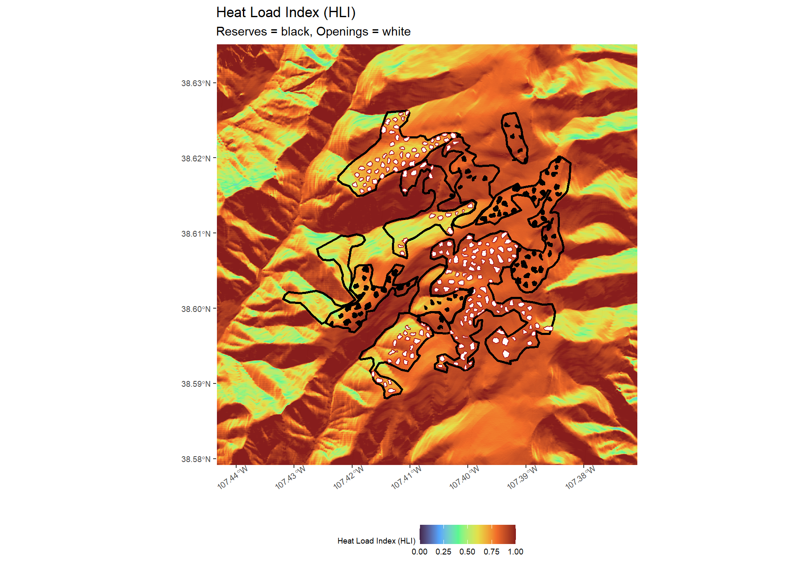
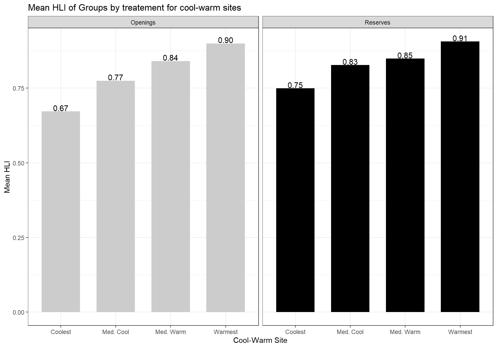
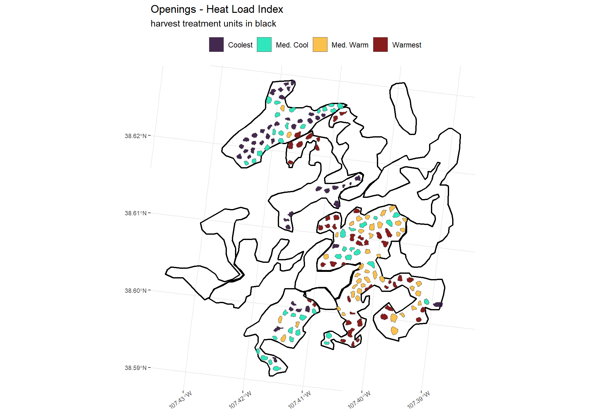
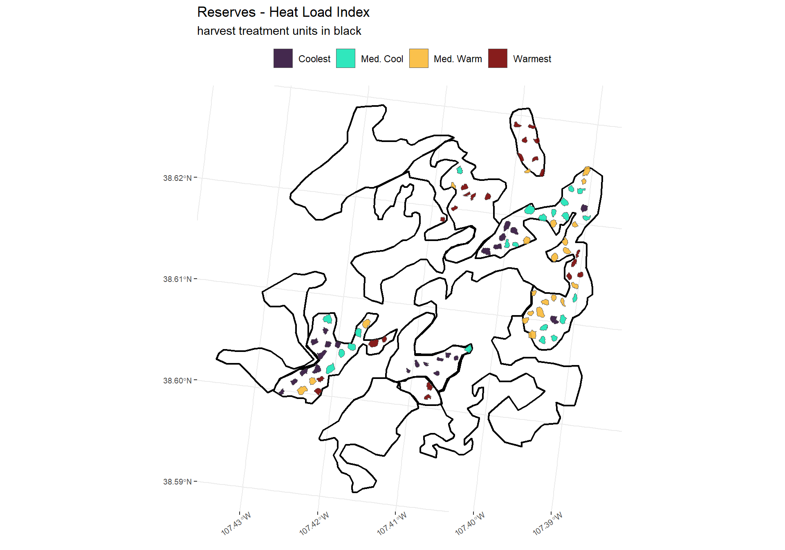

3 Analysis of HLI
# turn off the s2 processing
## https://stackoverflow.com/questions/68478179/how-to-resolve-spherical-geometry-failures-when-joining-spatial-data
sf::sf_use_s2(FALSE)3.1 Load Data
Spatial data was loaded and cleaned in prior chapter.
# read
topo <- readRDS("../data/topo.RDS")
all_groups_topo <- sf::st_read("../data/all_groups_topo.gpkg")
units <- sf::st_read("../data/units.gpkg")3.2 Set up base map
# map
vars <- c(
"elev"
, "slope_deg"
, "aspect_deg"
, "folded_aspect_deg"
, "hli"
)
vars_title <- c(
"Elevation (m)"
, "Slope (\u00B0)"
, "Aspect (\u00B0)"
, "Folded Aspect (\u00B0)"
, "Heat Load Index (HLI)"
)
vars_color <- c(
"viridis"
, "cividis"
, "inferno"
, "plasma"
, "turbo"
)
vars_llim <- c(
min(topo$elev, na.rm=T)*.95
, 0
, 0
, 0
, 0
)
vars_ulim <- c(
max(topo$elev, na.rm=T)*1.05
, max(as.numeric(topo$slope_deg), na.rm=T)*1.05
, 360
, 180
, 1
)
# plts <- list()
plt_fn <- function(x){
(
ggplot() +
stars::geom_stars(data = (topo %>% dplyr::select(vars[x]))[]) +
scale_fill_viridis_c(option = vars_color[x], alpha = 0.9, na.value = "transparent"
, limits = c(vars_llim[x], vars_ulim[x])
) +
geom_sf(data = units, alpha = 0, lwd = 1, color = "black") +
labs(
title = vars_title[x]
, fill = vars_title[x]
) +
xlab("") +
ylab("") +
scale_x_continuous(expand = c(0, 0)) +
scale_y_continuous(expand = c(0, 0)) +
theme_bw() +
theme(
legend.position = "bottom"
, legend.direction = "horizontal"
, legend.margin = margin(0,0,0,0)
, legend.text = element_text(size = 7)
, legend.title = element_text(size = 7)
, axis.text.y = element_text(size = 7)
, axis.text.x = element_text(size = 7, angle = 35, hjust = 0.7)
, panel.border = element_blank()
)
)
}3.3 Spatial groups and HLI
See this section for discussion on HLI. HLI is a proxy for aspect-driven solar heating.
Higher values (i.e. closer to 1) represent warmer conditions while lower values (i.e. closer to 0) represent cooler conditions.
# load basemap
hli_basemap <- plt_fn(which(vars=="hli"))
# openings
hli_basemap +
geom_sf(
data = all_groups_topo %>% dplyr::filter(group == "Openings")
, fill = "white"
, color = "firebrick"
, lwd = 0.5
) +
geom_sf(
data = all_groups_topo %>% dplyr::filter(group == "Reserves")
, fill = "black"
, color = "black"
) +
labs(
subtitle = "Reserves = black, Openings = white"
)
3.4 Summary of groups and HLI
#summary
all_groups_topo %>% sf::st_set_geometry(NULL) %>%
dplyr::group_by(group) %>%
dplyr::summarise(
N = n()
, mean_hli = mean(hli, na.rm = T)
, min_hli = min(hli, na.rm = T)
, max_hli = max(hli, na.rm = T)
, hli_25 = quantile(hli, 0.25)
, hli_75 = quantile(hli, 0.75)
) %>%
kableExtra::kable(
caption = "Summary statistics by group type"
, col.names = c(
"Group Type"
, "# Groups"
, "Mean HLI"
, "Min. HLI"
, "Max. HLI"
, "25% HLI"
, "75% HLI"
)
, digits = 2
) %>%
kableExtra::kable_styling(font_size = 12) %>%
kableExtra::column_spec(1, bold = TRUE, width = "18em")| Group Type | # Groups | Mean HLI | Min. HLI | Max. HLI | 25% HLI | 75% HLI |
|---|---|---|---|---|---|---|
| Openings | 179 | 0.80 | 0.56 | 0.97 | 0.72 | 0.86 |
| Reserves | 90 | 0.83 | 0.64 | 0.98 | 0.81 | 0.87 |
3.5 Quartiles of HLI
all_groups_topo_fnl <- all_groups_topo %>%
dplyr::group_by(group) %>%
dplyr::mutate(
hli_group_percent_rank = dplyr::percent_rank(hli)
, hli_group_qrtl = dplyr::case_when(
hli_group_percent_rank <= .25 ~ "Coolest"
, hli_group_percent_rank <= .5 ~ "Med. Cool"
, hli_group_percent_rank <= .75 ~ "Med. Warm"
, hli_group_percent_rank <= 1 ~ "Warmest"
, TRUE ~ "ERROR"
)
) %>%
dplyr::mutate(
hli_group_qrtl = factor(
hli_group_qrtl
, ordered = TRUE
, levels = c("Coolest", "Med. Cool", "Med. Warm", "Warmest")
)
) %>%
dplyr::ungroup() %>%
dplyr::mutate(
hli_overall_percent_rank = dplyr::percent_rank(hli)
, hli_overall_qrtl = dplyr::case_when(
hli_overall_percent_rank <= .25 ~ "Coolest"
, hli_overall_percent_rank <= .5 ~ "Med. Cool"
, hli_overall_percent_rank <= .75 ~ "Med. Warm"
, hli_overall_percent_rank <= 1 ~ "Warmest"
, TRUE ~ "ERROR"
)
) %>%
dplyr::mutate(
hli_overall_qrtl = factor(
hli_group_qrtl
, ordered = TRUE
, levels = c("Coolest", "Med. Cool", "Med. Warm", "Warmest")
)
) %>%
sf::st_make_valid()
sf::st_write(all_groups_topo_fnl, "../data/all_groups_topo_fnl.gpkg", append = FALSE)3.6 HLI Quartiles by treatment type
all_groups_topo_fnl %>%
sf::st_set_geometry(NULL) %>%
dplyr::group_by(group, hli_group_qrtl) %>%
dplyr::summarise(
mean_hli = mean(hli, na.rm = T)
) %>%
ggplot(.) +
geom_col(mapping = aes(y = mean_hli, x = hli_group_qrtl, fill = group), width = 0.7) +
geom_text(
aes(x = hli_group_qrtl, y = mean_hli, label = scales::comma(mean_hli, accuracy = .01))
, color = "black", size = 4
, position = position_dodge(0.9)
, vjust = -0.1
) +
facet_grid(.~group) +
labs(
title = "Mean HLI of Groups by treatement for cool-warm sites"
) +
xlab("Cool-Warm Site") +
ylab("Mean HLI") +
scale_fill_manual(values = c("gray80", "black")) +
theme_bw() +
theme(
legend.position = "none"
)
There is a difference in the HIL of cool and medium cool groups across the opening and reserve treatments.
3.7 Map Cool and Warm Sites
p_hli_fn <- function(x){
ggplot() +
geom_sf(
data = units
, lwd = 0.8
, alpha = 0
, color = "black"
) +
geom_sf(
data = all_groups_topo_fnl %>% dplyr::filter(group == x)
, aes(fill = hli_overall_qrtl)
, lwd = 0
) +
scale_fill_viridis_d(option = "turbo", alpha = 0.9) +
labs(
title = paste(x, "- Heat Load Index")
, subtitle = "harvest treatment units in black"
) +
theme_bw() +
theme(
legend.position = "top"
, legend.title = element_blank()
, axis.text.y = element_text(size = 7)
, axis.text.x = element_text(size = 7, angle = 35, hjust = 0.7)
, panel.border = element_blank()
)
}
c(unique(all_groups_topo_fnl$group)) %>%
purrr::map(p_hli_fn)